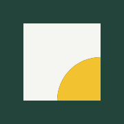

Inlay: check sheet
Everything at real pixel size. Read it at 100 %: if a detail is gone at 16 or 32, simplify the favicon.
Mark size ramp (light, dark)
Logos on light and dark, at display size and at minimum width
One colour: black, white on ink, white on accent
Favicon in a browser tab (16 px), light and dark
1632 48
48
App icon: iOS home screen, Android circle mask, maskable safe zone

